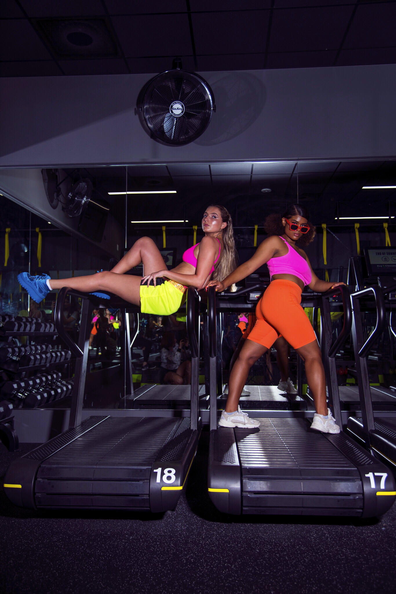
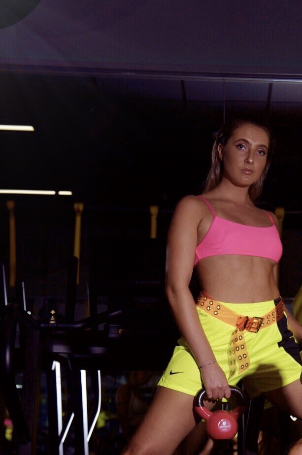
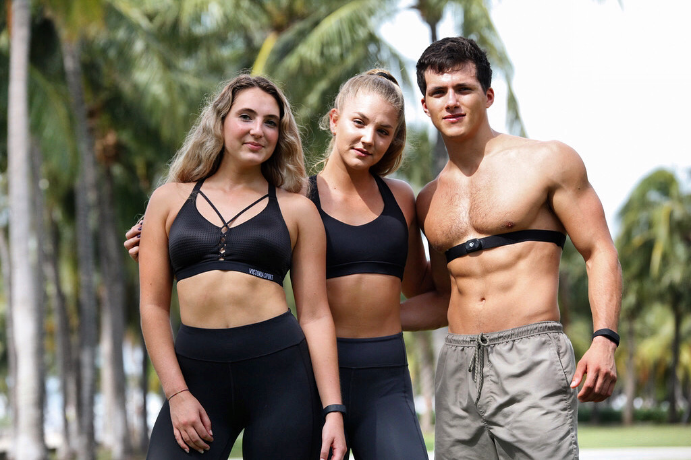
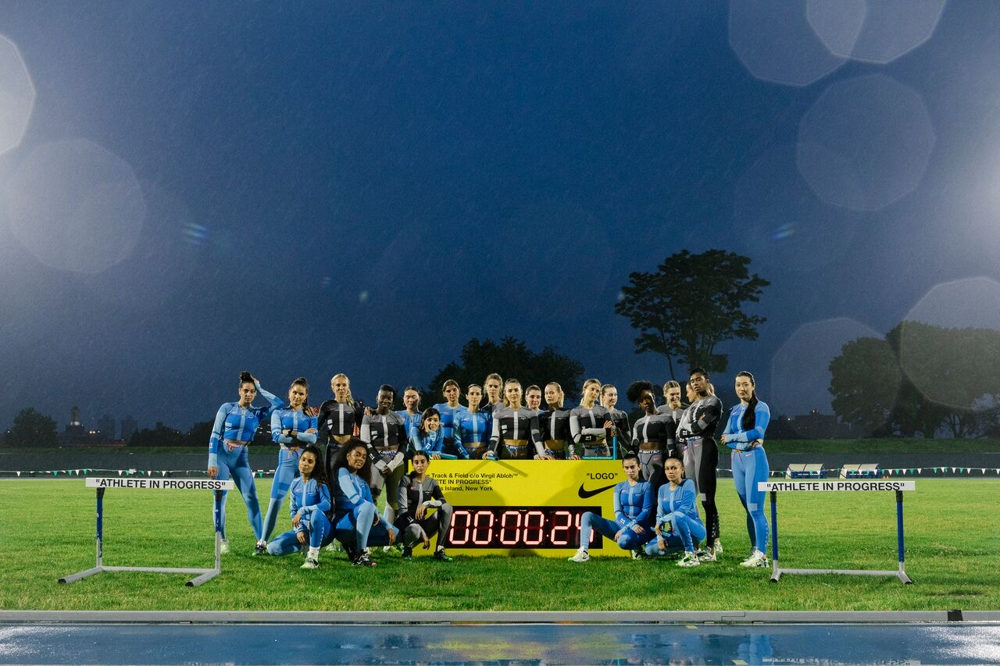
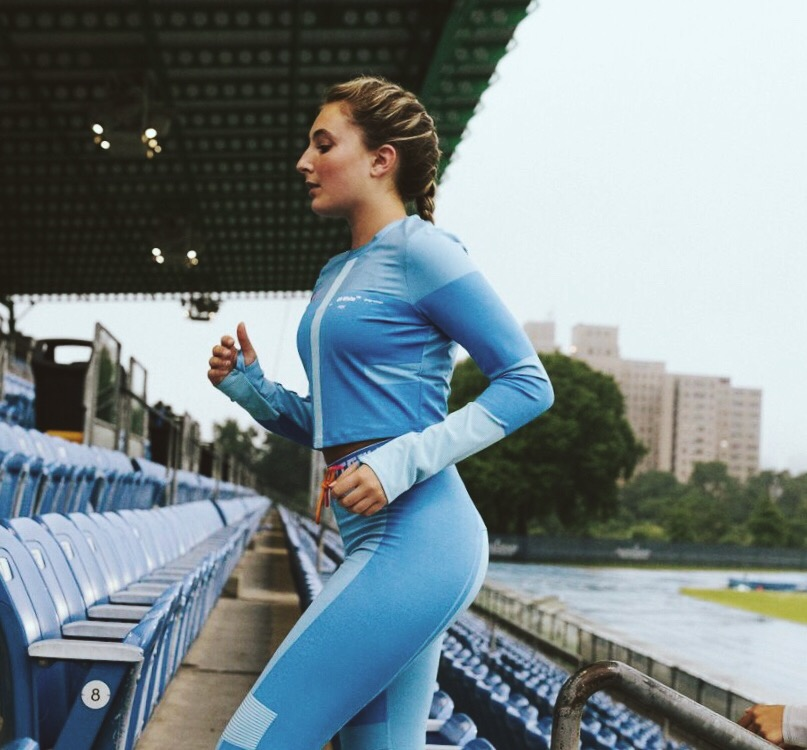
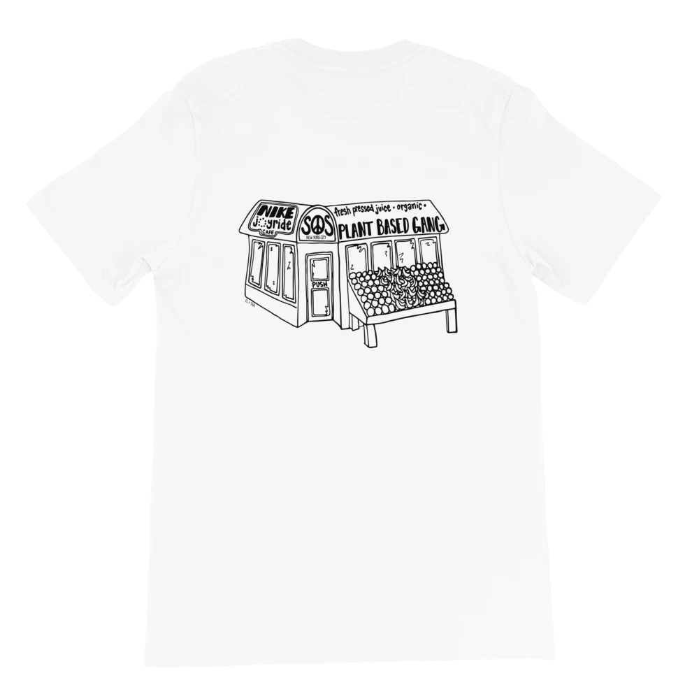

About
Based in Miami, New York City, and Boston, Eloise Davenport is a creative and an academic. She is a seasoned researcher and accomplished student graduating with her BS in Applied Human Physiology seeking a career in the wellness industry with an entrepreneurial focus. Her interests and experiences range from modeling, poetry, and design to scientific writing and marketing.
Wellness
Academia
Eloise’s honorable academic attainments at the University of Miami have led her on a path of serving health to others and investigating the public health we face today. Her research has taken her all over the world to investigate a range of topics from student health in Santiago, Chile and HIV and sexuality topics to the ways in which our cell phones affect our cognition. She vehemently believes in and promotes justice in health, with a forward focus centered in vastly exploiting the power of health and wellness to improve quality of life.
OchoSystem
As a research assistant for the OchoSystem, Eloise provides founder, Nike Master Trainer, and GQ columnist Joe Holder with relevant information for various projects, relating to everything from exercise physiology, nutrition, meditation, and sleep to business. Eloise has assisted with the curation of Nike collaboration line launch retreats, created briefs for interviews, presentations, and talks with some of the biggest names in fashion, media, and sports, as well as helped to plan service events for System of Service, Joe’s non-profit.
Personal
From New Hampshire, Eloise has a deep love of the outdoors and all things movement— be it hiking, swimming, biking, scuba diving, or walking around a new city. Her personal athletic history is in competitive jump-roping, track (hurdles!), soccer, and long-distance running, and she is a spirited advocate for youth sports. Eloise has run in various competitive races, including half marathons, and is currently training for her first marathon. She follows a plant-based diet.
Featured
Distraction Magazine ⇲
Eloise Davenport and Haley Lanzoni by Kristian DelRosario for Distraction Magazine October 2019.
Eloise Davenport and Luz Estrella by Kristian DelRosario for Distraction Magazine October 2019.
Eloise Davenport by Kristian DelRosario for Distraction Magazine October 2019.
Biostrap ⇲
Eloise Davenport for Biostrap by Roberto Matteo.
Eloise Davenport, Amanda Medlock, and Andrés Preschel for Biostrap by Roberto Matteo.
Nike x Off-White "Track & Field" Launch
Nike Track & Field c/o Virgil Abloh "ATHLETE IN PROGRESS" Launch event. Randall's Island, NY 2019 by Steven John Irby.

Nike Track & Field c/o Virgil Abloh "ATHLETE IN PROGRESS" Launch event. Randall's Island, NY 2019 by Steven John Irby.
Nike Track & Field c/o Virgil Abloh "ATHLETE IN PROGRESS" Launch event. Randall's Island, NY 2019 by Steven John Irby.
Eloise Davenport for Nike x Off-White Track & Field Launch by Steven John Irby.
The Miami Hurricane ⇲

Poem by Eloise Davenport published in the May 2020 Senior Package of The Miami Hurricane.
Design
Plant Based Gang x Nike Bodega Tee ⇲
Bodega design for Joe Holder's Plant Based Gang. Inspired by the "Everybody eats" philosophy, over 200 meals served per shirt purchased. C/o Christina Radford.